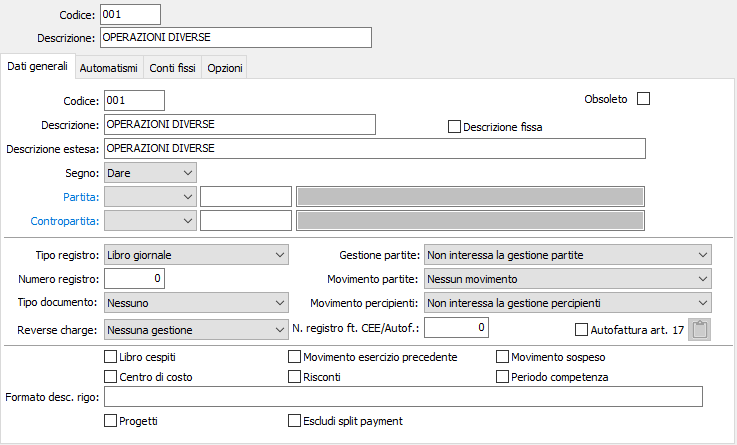
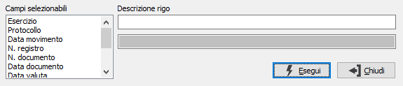
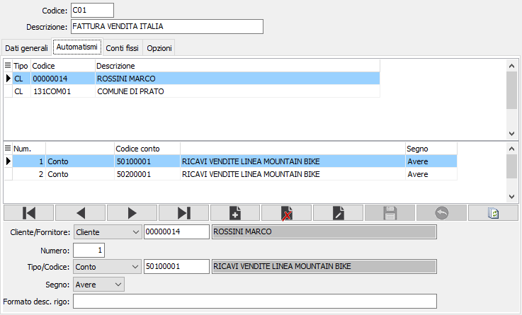
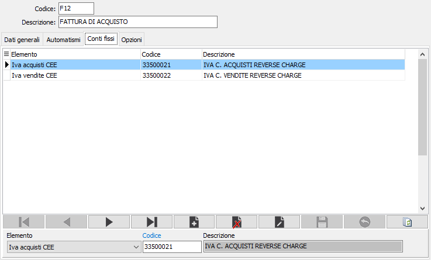
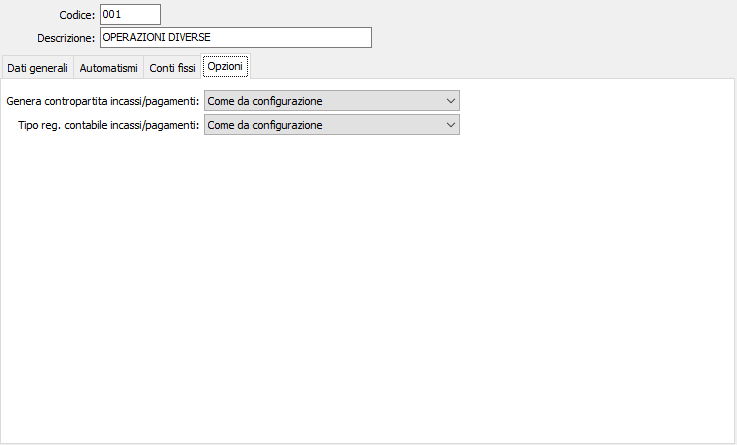
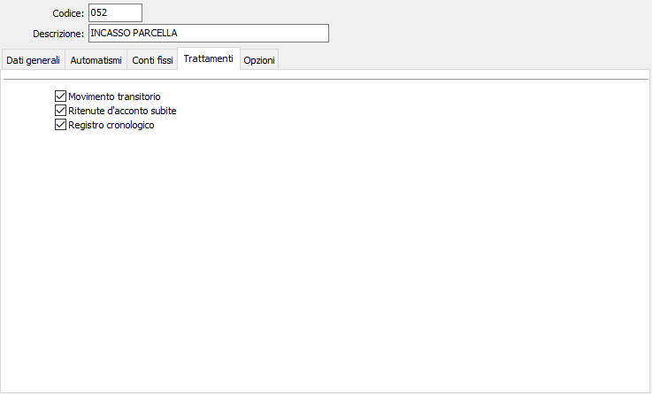

Causali contabili
La tabella Causali contabili è fondamentale per la procedura di Contabilità e per i moduli da essa dipendenti. Gli elementi della tabella governano infatti le registrazioni contabili, attivano i trattamenti Iva, i trattamenti per le partite aperte, ecc.
L’utente può organizzare come meglio crede la propria tabella. Ad esempio, può creare una sola causale contabile per la registrazione delle fatture di acquisto omettendo di indicare il codice del conto di costo da utilizzare, oppure può crearne un numero rilevante indicando in ciascuna causale uno specifico conto di costo da utilizzare. Ovviamente nel primo caso utilizzerà sempre la stessa causale, ma dovrà imputare ogni volta la contropartita di costo; nel secondo caso, invece, dovrà scegliere fra molte casuali di registrazione fatture di acquisto ma, una volta scelta la causale, la registrazione contabile si completerà automaticamente.
In ogni caso alcune causali dovranno essere moltiplicate in presenza di specifici moduli di programma. Così, ad esempio, la presenza del modulo Gestione cespiti comporterà la presenza di una causale di Fattura acquisto cespiti; la presenza della Contabilità analitica comporterà la presenza di una causale di Fattura acquisto con centri di costo, e così via. Le causali contabili possono essere anche create interattivamente durante le registrazione contabili, ma è evidente l’opportunità di procedere in via preliminare, rispetto al primo utilizzo dei programmi, alla creazione ragionata di causali idonee alle esigenze aziendali. Durante la creazione delle causali contabili, si tenga presente l’esistenza della funzione “Duplica” (CTRL+N) che può rivelarsi molto comoda.
Se l’azienda è configurata come “Professionista”, alla tabella standard Causali contabili si aggiunge la linguetta “Trattamenti” che consente di definire i vari trattamenti per la gestione delle contabilità in regimi speciali.
Dati generali

CODICE CAUSALE: codice alfanumerico di 3 caratteri per individuare la causale attiva. Sul campo sono attive le funzioni di ricerca (F9) sulla tabella stessa.
DESCRIZIONE: campo alfanumerico di 30 caratteri per descrivere la causale contabile in esame. La descrizione contenuta in questo campo viene proposta durante le registrazione contabili e, se confermata, viene stampata sul Giornale di Contabilità e sui Registri Iva. In fase di immissione prima nota, questa descrizione può essere variata se il successivo flag "Descrizione fissa” è privo di spunta.
DESCRIZIONE FISSA: flag per definire se la descrizione della causale deve rimanere fissa o può essere modificata in fase di immissione movimenti contabili. L’apposizione della spunta su questo campo definisce che la descrizione non può essere variata.
DESCRIZIONE ESTESA: campo alfanumerico di 60 caratteri per descrivere più compiutamente la causale contabile in esame, nel caso che la descrizione del campo precedente non sia esaustiva. La descrizione contenuta in questo campo viene visualizzata nelle finestre di ricerca durante le registrazione contabili, ma non viene stampata sui registri fiscali. Consente pertanto di descrivere indicazioni d’uso a beneficio dell’utente.
SEGNO: combo box per indicare la sezione contabile a cui verrà assegnato, durante la registrazione di prima nota, l’importo relativo al sottoconto indicato nel campo partita. La compilazione di questo campo è obbligatoria. Valori ammessi: Dare; Avere.
TIPO PARTITA: definisce la tipologia del codice inserito nel campo successivo. Valori ammessi: Sottoconto, Cliente, Fornitore
PARTITA: codice alfanumerico di 8 caratteri, presente nella tabella piano dei conti, per definire l'eventuale sottoconto che deve essere movimentato nel primo rigo della registrazione di prima nota relativa alla causale in esame. Questo sottoconto verrà movimentato in dare o in avere secondo quanto previsto dal campo precedente. Il codice deve essere inserito se la causale prevede sempre e comunque l’utilizzazione del sottoconto indicato; in caso contrario, il campo deve essere lasciato vuoto. Sul campo sono attive le funzioni di ricerca (F9) sulla tabella piano dei conti limitato alla selezione di clienti, fornitori o sottoconti a seconda del valore del campo inserito precedentemente.
TIPO CONTROPARTITA: definisce la tipologia del codice inserito nel campo successivo. Valori ammessi: Sottoconto, Cliente, Fornitore
CONTROPARTITA: codice alfanumerico di 8 caratteri, presente nella tabella sottoconti, per definire l'eventuale sottoconto che deve utilizzato come contropartita nel secondo rigo della registrazione di prima nota relativa alla causale in esame. Questo sottoconto verrà movimentato nella sezione opposta rispetto a quella in cui viene movimentato il sottoconto di “partita”. Omettendo l’inserimento di un codice di sottoconto in questo campo, durante la registrazione di prima nota verrà omessa la proposizione del sottoconto e l’utente dovrà provvedere interattivamente all’inserimento. Sul campo sono attive le funzioni di ricerca (F9) e manutenzione (CTRL+W) sulla tabella stessa.
TIPO REGISTRO: combo box per flag per definire il tipo di registro su cui verrà stampata la registrazione contabile attiva: libro giornale, registro Iva vendite, registro Iva dei corrispettivi, registro Iva acquisti.
NUMERO REGISTRO: campo numerico per indicare il numero di serie di registro Iva da utilizzare dalla causale attiva. Il campo è abilitato solo se la causale si riferisce ad un movimento Iva. Vengono accettati valori uguali o inferiori al numero di registri Iva presente in configurazione applicativo.
TIPO DOCUMENTO: combo box per determinare il tipo di documento e la modalità di movimentazione sul registro Iva. Il campo è attivo solo nelle causali che prevedono l’uso dei registri Iva.
GESTIONE PARTITE: combo box per definire l’eventuale trattamento delle partite aperte da parte della causale in esame. Il campo è significativo solo se i relativi moduli di programma sono attivi.
MOVIMENTO PARTITE: combo box, significativo solo se il campo precedente abilita la gestione delle partite, per definire il tipo di movimento da effettuare sulle partite aperte.
MOVIMENTO PERCIPIENTI: combo box per abilitare la gestione percipienti e definire il tipo di movimento relativo. È significativo solo se il modulo è attivo.
REVERSE CHARGE: Definisce il tipo di comportamento da attivare nel caso di fatture soggette al meccanismo del reverse charge.
Nessuna gestione: non attiva nessun meccanismo di calcolo.
Fattura CEE/Autofattura ex. art. 17: in questo caso tutto il documento che viene registrato è soggetto al meccanismo del reverse charge.
Metodo misto: la registrazione del reverse charge è legata al codice Iva utilizzato, per cui se il codice Iva ha l'indicatore "Liquidazione Iva" impostato a "Operazioni CEE" viene applicato il reverse charge, altrimenti si comporta come una normale fattura. Questo tipo di metodo deve essere utilizzato per la registrazione di fatture di acquisto miste (come ad esempio nel settore dell'edilizia).
NUMERO REGISTRO FT CEE/AUTOF.: campo numerico per inserire la serie di registro delle vendite da utilizzare per la registrazione delle fatture estere integrate.
AUTOFATTURA ART.17: flag per abilitare la stampa delle Autofatture art. 17. Quando il flag contiene la spunta e la causale si riferisce ad una fattura di acquisto, è possibile, tramite l'apposita scelta, effettuare la stampa del documento. Se attiva la spunta si abilita il pulsante che consente di inserire delle note che saranno stampate sul documento.
LIBRO CESPITI: flag, significativo se è attivo il modulo gestione cespiti. Se il flag contiene la spunta, la causale determina l’apertura della finestra video di scelta cespite.
CENTRO DI COSTO: flag, significativo se è attivo il modulo contabilità analitica. Se il flag contiene la spunta, la causale determina l’apertura della finestra video di imputazione dei centri di costo.
MOVIMENTO ESERCIZIO PRECEDENTE: flag per qualificare la causale alla registrazione di movimenti di rettifica relativi all’esercizio precedente. Se il flag contiene la spunta, la registrazione contabile, anche se datata nell’esercizio in corso, aggiorna i saldi e concorre al bilancio dell’esercizio precedente.
RISCONTI: Se contiene la spunta, abilita la richiesta, durante le registrazioni di prima nota, delle date di competenza sui costi e ricavi movimentati al fine di calcolare i risconti.
MOVIMENTO SOSPESO: flag. Se contiene la spunta, definisce come “sospeso” il movimento contabile registrato tramite la causale.
PERIODO DI COMPETENZA: flag, valido solo per OS1 Enterprise, per abilitare la richiesta del periodo di competenza del movimento.
FORMATO DESC. RIGO: Consente di specificare una descrizione personalizzata relativa alla causale attiva. Tramite il tasto F11 si accede alla seguente finestra.

Da questa finestra è possibile personalizzare la descrizione della causale attiva scrivendo il testo e/o selezionando i campi con doppio click o trascinandoli nella descrizione. Sul movimento al campo sarà assegnato il corrispondente valore; è così possibile comporre la descrizione con del testo statico e dinamico.
PROGETTI: flag, valido solo se attiva la gestione progetti in contabilità, per abilitare la richiesta del progetto sul movimento.
ESCLUDI DA SPLIT PAYMENT: Il parametro è utilizzato:
nel caso di documento Iva (fattura/nota credito) nel caso in cui il documento sia relativo ad un ente pubblico e non si intenda applicare ad esso il meccanismo dello split payment (esempio: reverse charge)
nel caso di azienda ente pubblico per la registrazione di pagamenti a fornitore per i quali non si intende applicare il meccanismo del reverse charge (esempio: reverse charge)
Automatismi

Nella sezione degli automatismi è possibile inserire le contropartite contabili che saranno richiamate automaticamente nel movimento di prima nota. Cliccando sul bottone Nuovo o premendo il tasto F4 ci si posiziona in stato di inserimento per aggiungere alla causale contabile un elenco di una o più contropartite, inserendo per ciascuna di esse il codice del sottoconto o del codice Iva desiderato, un'eventuale descrizione di rigo personalizzata, analoga a quella della sezione dati generali, ed il segno (dare o avere) con cui deve essere movimentato tale codice. Specificando il cliente oppure il fornitore è possibile diversificare gli automatismi in base ai singoli codici specificati.
La struttura di causali contabili più semplice è quella prevista per gli utenti del solo modulo base di contabilità generale ed IVA: in questo caso, occorrono solo le causali che fanno riferimento ai registri Iva.
Gli utenti che utilizzano la gestione partite aperte clienti e fornitori devono invece creare anche le causali per tutte le operazioni (pagamenti, insoluti, anticipi, ecc) che riguardano i clienti ed i fornitori.
Tutti gli utenti devono comunque creare la causale “libera”, contrassegnata dal codice "000" (zero-zero-zero) e priva di tutte le informazioni ad eccezione del segno che deve essere D.
Codici fissi

Nella sezione dei codici fissi è possibile ridefinire i sottoconti associati ai codici presenti in configurazione per fare in modo che per i movimenti in cui si utilizza questa causale il sottoconto sia diverso da quello configurato; è possibile inserire un elenco di sottoconti associati al relativo elemento facente parte dei codici di conto fissi presenti in configurazione. Per esempio se per le fattura CEE voglio che i conti IVA siano diversi da quelli previsti in configurazione, assegnerò gli esatti codici sulla causale che utilizzo per la registrazione delle fatture CEE.
Opzioni

Nella sezione opzioni è possibile ridefinire, per le causali che le gestiscono, le opzioni di generazione contropartite e tipo di registrazione incassi pagamenti, già presenti in configurazione partite aperte.
Trattamenti

MOVIMENTO TRANSITORIO: check box significativo per la registrazione di costi e ricavi (parcelle, fatture acquisto, spese varie): se gli importi correlati sono già stati pagati o incassati, il campo rimane vuoto ed i valori inseriti vengono direttamente imputati a costo o a ricavo: se invece gli importi non sono stati pagati, il campo viene spuntato ed i valori inseriti vengono imputati ai conti transitori di costi o ricavi sospesi.
RITENUTE D’ACCONTO SUBITE: check box significativo per causali di incasso parcelle attive. Se attivo, considera il movimento contabile ai fini dell’autocertificazione ritenute d’acconto subite.
REGISTRO CRONOLOGICO: check box per definire se l’operazione contabile in esame è rilevante per la stampa sul registro cronologico, in combinazione con il valore del campo “Sezione registro cronologico” dell’anagrafica Sottoconti.